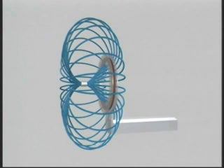
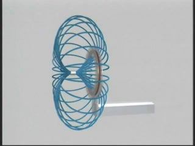

SUBJECT: Magnetic Inductance
DESCRIPTION: This video and animation illustrate Faraday's Law. As a permanent magnet is moved back and forth in the vacinity of a coil of conducting wire, a current is induced in the coil (as measured by the ammeter in the video). This induced current is proportional to the rate of change of magnetic flux through the enclosed area of the coil, and flows in such a direction as to generate a field whose change in flux opposes that change. In the animation, we show the evolution of the magnetic field during this process.
VISUALIZATIONS: Video (WMV); Animation pt. 1 (WMV); Animation pt. 2 (WMV)